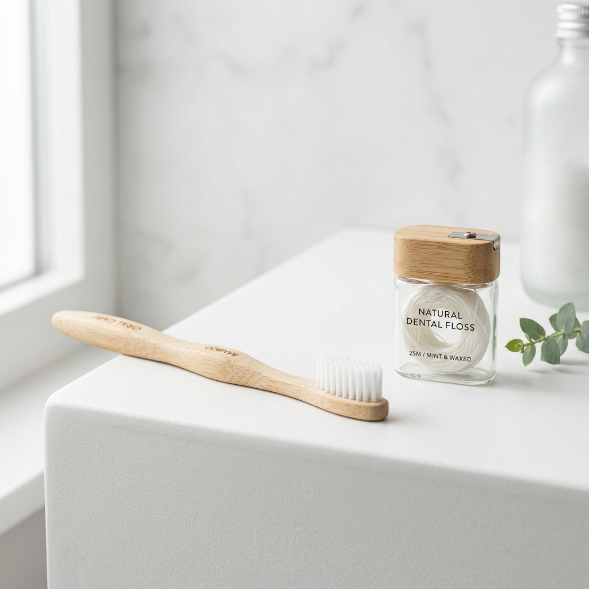

Dental Decay Analysis
Prevention is better than cure. Our systematic dental decay analysis reveals hidden factors and identifies issues before they become painful problems.
What is Dental Decay Analysis?
Dental decay analysis involves a thorough clinical and diagnostic examination of your teeth to identify any signs of decay or cavities in their early stages.
Performed during routine check-ups, this analysis uses advanced diagnostic tools like digital X-rays and intraoral imaging to assess your enamel health and recommend appropriate preventive or restorative care to preserve your natural smile.
Factors Contributing to Decay
Understanding the diverse elements that affect your oral health allows for personalized prevention.



Post-Analysis Care
Maintenance is key to ensuring that identified areas of the teeth don't progress into advanced problems.
- Hygiene Adherence: Strictly follow your customized brushing and flossing routine prescribed during your visit.
- Dietary Adjustments: Avoid excessive sugary or acidic items that lead to enamel erosion.
- Fluoride Support: Use the recommended fluoride toothpaste or mouthwash to help strengthen your existing tooth structure.
- Regular Check-ups: Don't skip follow-up visits; they are essential for monitoring progress and preventing future decay.
- Prescribed Care: If any specific medications or treatments were recommended, ensure you complete them as directed.
- Symptom Monitoring: Promptly report any unusual sensitivity or discomfort for an immediate expert evaluation.
Frequently Asked Questions
A comprehensive diagnostic process using visual examination, X-rays, and specialized tools to identify early signs of tooth decay and assess your enamel health.
Early detection is the most effective way to preserve your natural teeth and avoid invasive treatments like root canals or extractions.
Common signs include sensitivity, pain when eating, visible pits, and localized dark spots or discoloration on the teeth.
We use a combination of digital intraoral exams, high-resolution X-rays, and thorough clinical inspection to map your complete oral health profile.
We provide a detailed health report and a personalized root-cause treatment plan, focusing on both immediate repairs and long-term prevention.
By consistent oral hygiene, regular cleanings, a balanced diet, and ensuring you get adequate fluoride protection through approved products.
Protect Your Smile Early
Don't wait for pain. Experience a thorough dental decay analysis to identify risk factors and ensure the long-term health of your teeth.
Get in Touch
We're ready to discuss your personalized care plan. Fill out the form or reach us directly.